L'application juge réelle, servie par le gabarit en 390 × 844, pilotée par les vrais gestes : les Réglages s'ouvrent d'un clic sur le bouton, le nom se tape dans le champ. Aucune de ces images n'est un redessin, et aucune ne montre un état que le code ne produit pas.
Le bloc de l'écran d'accueil s'éteignait déjà dès que le téléphone portait un nom (spec 034) — cette spec-ci n'y touche pas. Celui des Réglages restait affiché quoi qu'il arrive : c'est lui qu'on traite.
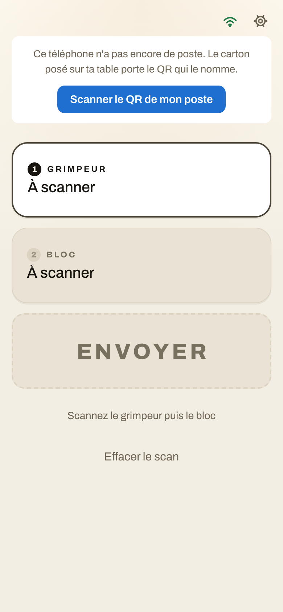
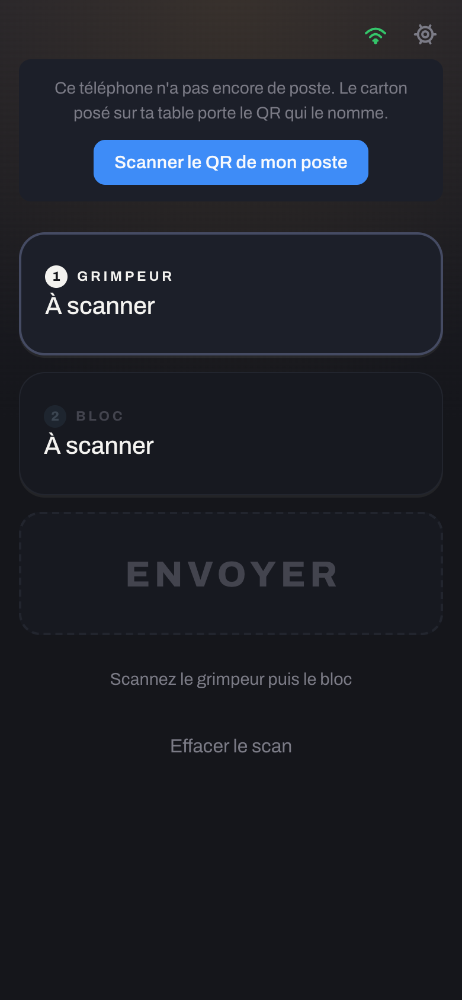
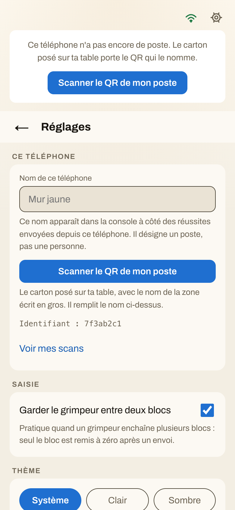
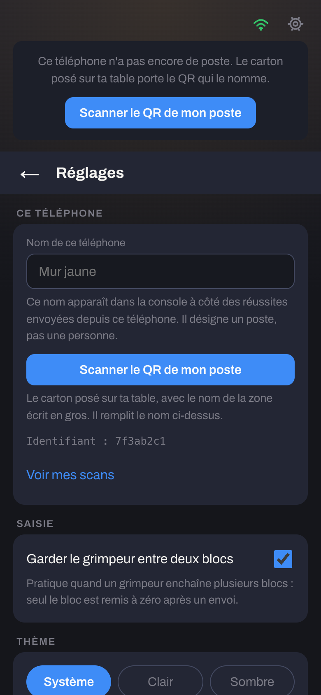
Le juge a tapé « Zone C » au clavier. Trois façons de traiter la demande ; Adrien a retenu la B le 03/09.
La demande reste : un bouton bleu pleine largeur et son explication, sur un téléphone qui porte déjà un nom. Servi par le gabarit de master — celui d'aujourd'hui, specs 040 et 030 comprises.
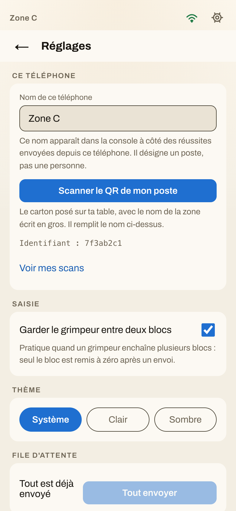
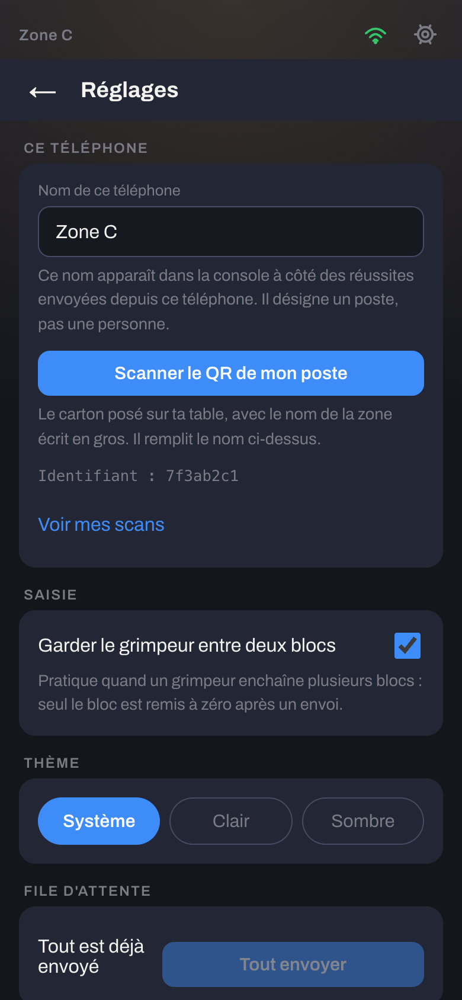
Le bouton et son explication disparaissent tous les deux. Vider le champ devient le seul chemin pour rescanner un carton. Écartée — capture d’un prototype, ce code n’existe pas.
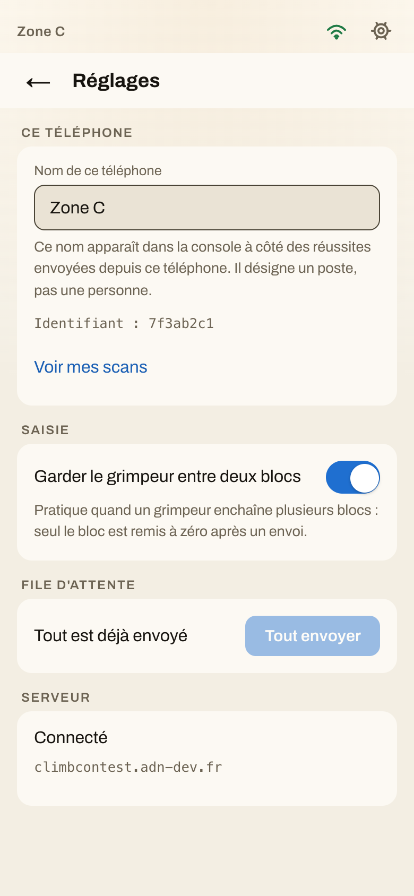
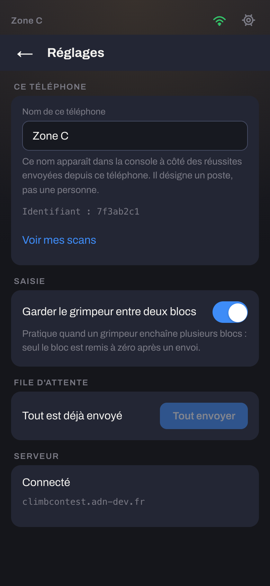
Plus de bouton bleu ni d’explication : la demande s’en va, le geste reste, à la même place que « Voir mes scans ». Un téléphone qui change de table se rescanne sans vider le champ d’abord. Servi par le code de la branche.
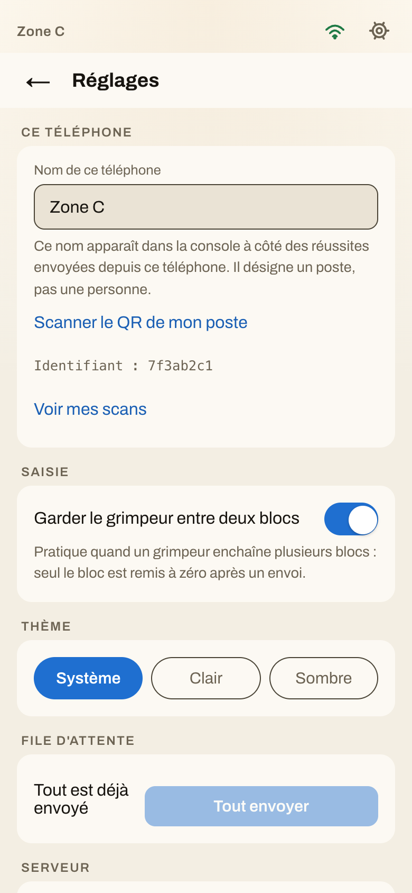
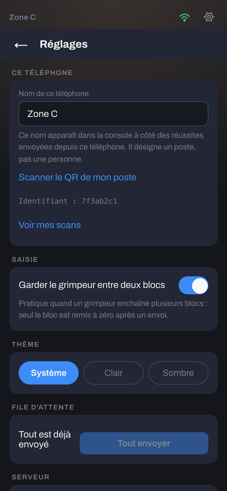
La seule case à cocher de l’application. Elle prend les cotes de l’interrupteur d’iOS et d’Android — 51 × 31, pastille de 27 — et le bleu des actions. La case native reste dessous, rendue invisible : le clavier, le focus et le lecteur d’écran ne perdent rien, et role="switch" la fait annoncer « interrupteur, activé ».
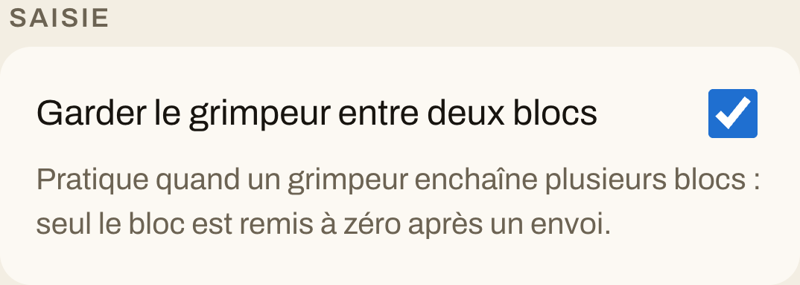
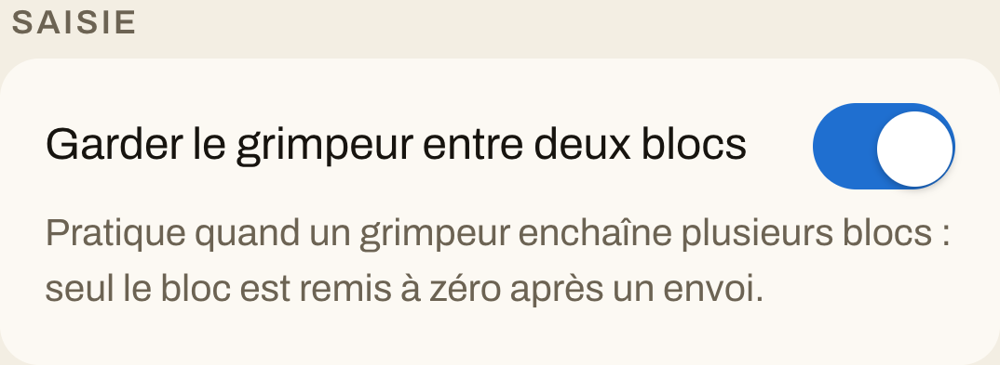
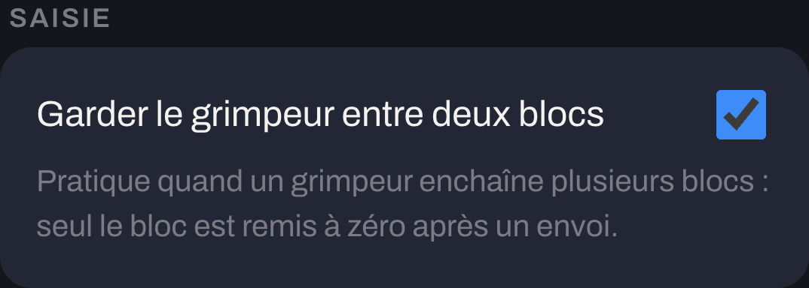
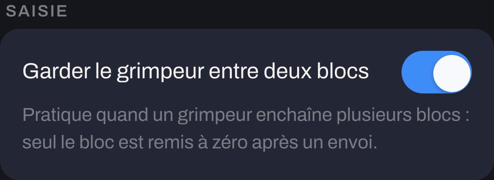
La branche rebasee sur master, qui a recu entre-temps la spec 040 (« Theme »), la spec 030 (« Catalogue », « Application ») et la spec 041 (la matiere : lisere d'encre, ombre du bouton). Quatre specs se sont posees dans le meme ecran sans un seul conflit git : c'est exactement le cas ou il faut regarder plutot que faire confiance. L'ecran Reglages entier, deroule.
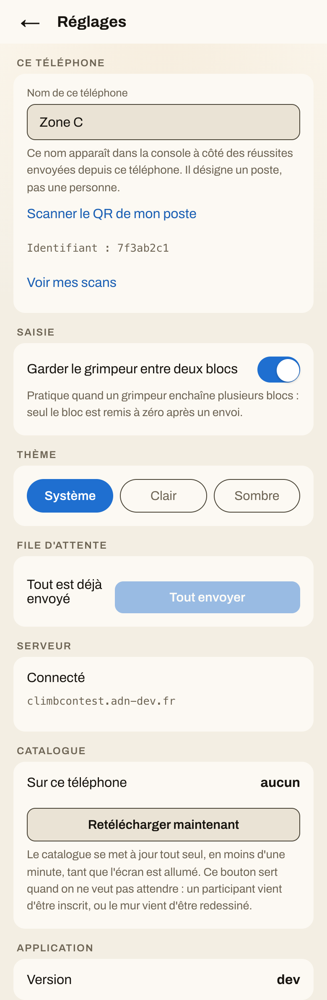
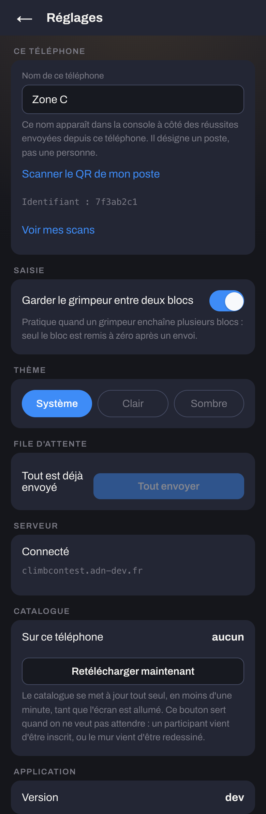